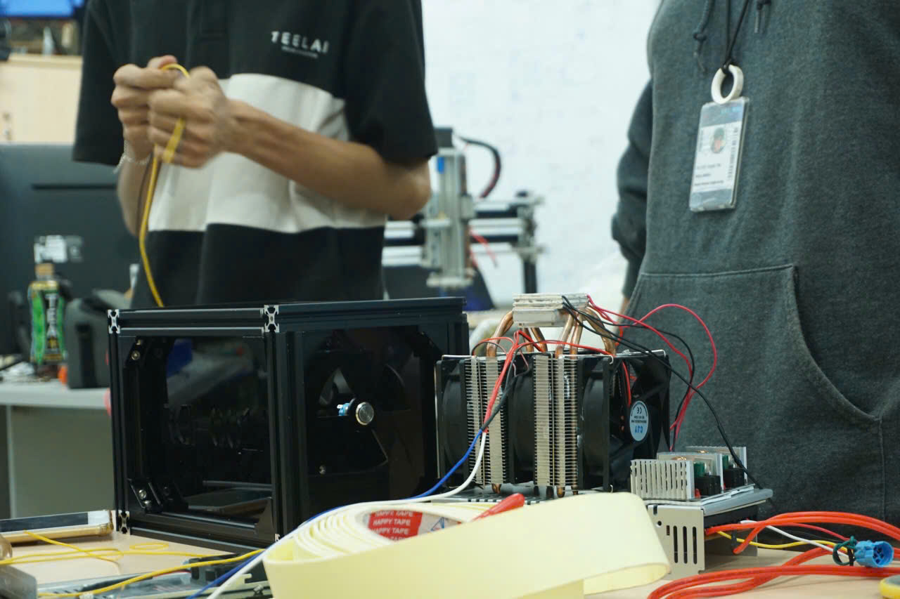
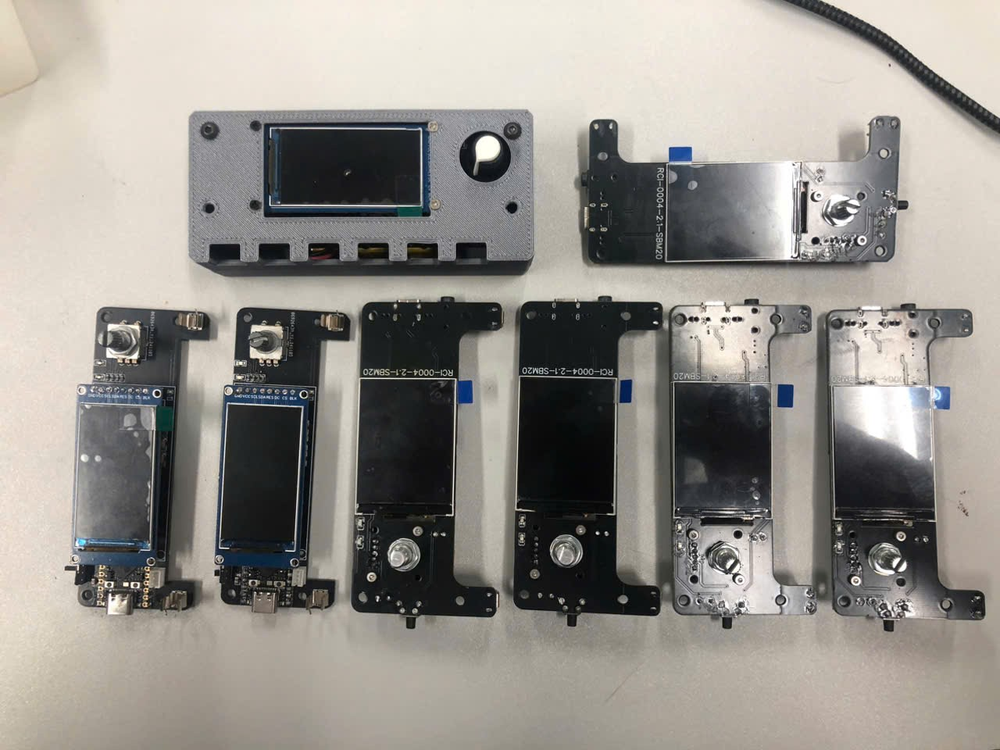
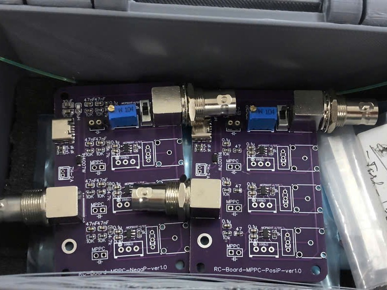

Rabbit Cave
Falling down the rabbit hole
WHAT WE DO

Cloud Chamber
A device using a sealed environment containing a supersaturated vapor of alcohol to detect and visualize the passage of ionizing radiation.
See more

Geiger-Müller Counter
An electronic instrument for detecting and measuring ionizing radiation using a Geiger–Müller tube. Detects ionizing radiation such as alpha, beta, and gamma rays.
See more

Multi-Pixel Photon Counter (MPPC)
A solid-state photodetector using multiple avalanche photodiode (APD) pixels in Geiger mode. Each pixel outputs a pulse at the same amplitude when detecting a photon.
See moreWHO ARE WE